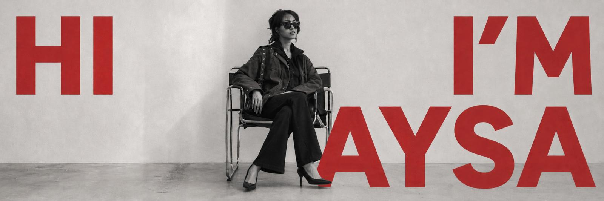

Stüdyo
Aysa Works hakkında
Aysa Works; iç mimar Aysa Yağız tarafından İstanbul'da kurulan, konut ve ticari iç mekânlar ile özel mobilya ve obje tasarımı yapan bir tasarım stüdyosudur.
Stüdyo; her projeyi kullanıcısının yaşam ritmini esas alan, malzemeyi öne koyan ve zamana karşı duran bir bütünlükle ele alır. Tasarım kararları; ışık, oran, doku ve doğal malzeme üzerinden kurulur — sade, dürüst ve sessiz.
İşbirliği yaptığımız usta zanaatkârlarla; mobilyadan armatüre, dolaptan dokumaya kadar mekânın bütününü tek bir dilden konuşturmaya çalışıyoruz.